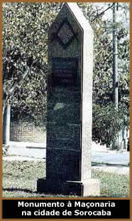

Introdução
Desde a crise do Antigo Sistema Colonial, a maçonaria
está presente em nossa história, destacando-se
inicialmente, entre alguns revolucionários da Inconfidência
Mineira e da Conjuração Baiana no final do século
XVIII. Nesse período que antecede a Independência,
a maçonaria assumiu uma posição avançada,
representando um importante centro de atividade política,
para difusão dos ideais do liberalismo anticolonialista.
Sua influência cresceu consideravelmente
durante o processo de formação do Estado Brasileiro,
onde apareceu como uma das mais importantes instituições
de apoio à independência, permanecendo atuante
ao longo de todo período monárquico no século
XIX. Nesse processo, a história do Brasil Império
é também a história da maçonaria,
que vem atuando na política nacional desde os primeiros
movimentos de independência, passando pelos irmãos
Andradas no Primeiro Reinado, até as mais importantes
lideranças do Segundo Império, no final do século
XIX.
Origem e desenvolvimento
da Maçonaria no Brasil
Embora tenha, a Maçonaria brasileira,
se iniciado em 1797 com a Loja Cavaleiros da Luz, criada na
povoação da Barra, em Salvador, Bahia, e ainda
com a Loja União, em 1800, sucedida pela Loja Reunião
em 1802, no Rio de Janeiro, só em 1822, quando a campanha
pela independência do Brasil se tornava mais intensa,
é que iria ser criada sua primeira Obediência,
com Jurisdição nacional, exatamente com a incumbência
de levar a cabo o processo de emancipação política
do país.
Criado a 17 de junho de 1822, por três
Lojas do Rio de Janeiro - a Commercio e Artes na Idade do Ouro
e mais a União e Tranquilidade e a Esperança de
Niterói, resultantes da divisão da primeira -
O Grande Oriente Brasileiro teve, como seus primeiros mandatários
José Bonifácio de Andrada e Silva, ministro do
Reino e de Estrangeiros e Joaquim Gonçalves Ledo, Primeiro
Vigilante. A 4 de outubro do mesmo ano, já após
a declaração de independência de 7 de setembro,
José Bonifácio foi substituído pelo então
príncipe regente e, logo depois, Imperador D. Pedro I
(Irmão Guatimozim). Este, diante da instabilidade dos
primeiros dias de nação independente e considerando
a rivalidade política entre os grupos de José
Bonifácio e de Gonçalves Ledo - que se destacava,
ao lado de José Clemente Pereira e o cônego Januário
da Cunha Barbosa, como o principal líder dos maçons
- mandou suspender os trabalhos do Grande Oriente, a 25 de outubro
de 1822.
Somente em novembro de 1831, após a abdicação
de D. Pedro I - ocorrida a 7 de abril daquele ano - é
que os trabalhos maçônicos retomaram força
e vigor, com a reinstalação da Obediência,
sob o título de Grande Oriente do Brasil, que nunca mais
suspendeu as suas atividades.
Instalado no Palácio Maçônico
do Lavradio, no Rio de Janeiro, a partir de 1842, e com Lojas
em praticamente todas as províncias, o Grande Oriente
do Brasil logo se tornou um participante ativo em todas as grandes
conquistas sociais do povo brasileiro, fazendo com que sua História
se confunda com a própria História do Brasil Independente.
Através de homens de alto espírito
público, colocados em arcas importantes da atividade
humana, principalmente em segmentos formadores de opinião,
como as Classes Liberais, o Jornalismo e as Forças Armadas
- o Exército, mais especificamente - O Grande Oriente
do Brasil iria ter, a partir da metade do século XIX,
atuação marcante em diversas campanhas sociais
e cívicas da nação.
Assim, distinguiu-se na campanha pela extinção
da escravatura negra no país, obtendo leis que foram
abatendo o escravagismo, paulatinamente; entre elas, a "Lei
Euzébio de Queiroz", que extinguia o tráfico
de escravos, em 1850, e a "Lei Visconde do Rio Branco",
de 1871, que declarava livre as crianças nascidas de
escravas daí em diante. Euzébio de Queiroz foi
maçom graduado e membro do Supremo Conselho da Grau 33;
o Visconde do Rio Branco, como chefe de Gabinete Ministerial,
foi Grão-Mestre do Grande Oriente do Brasil. O trabalho
maçônico só parou com a abolição
da escravatura, a 13 de maio de 1888.
A Campanha republicana, que pretendia evitar
um terceiro reinado no Brasil e colocar o país na mesma
situação das demais nações centro
e sul americanas, também contou com intenso trabalho
maçônico de divulgação dos ideais
da República, nas Lojas e nos Clubes Republicanos, espalhados
por todo o país. Na hora final da campanha, quando a
república foi implantada, ali estava um maçom
a liderar as tropas do Exército com seu prestígio:
Marechal Deodoro da Fonseca que viria a ser Grão-Mestre
do Grande Oriente do Brasil.
Durante os primeiros quarenta anos da República
- período denominado "República Velha"
- foi notória a participação do Grande
Oriente do Brasil na evolução política
nacional, através de vários presidentes maçons,
além de Deodoro: Marechal Floriano Peixoto Moraes, Manoel
Ferraz de Campos Salles, Marechal Hermes da Fonseca, Nilo Peçanha,
Wenceslau Brás e Washington Luís Pereira de Souza.
Durante a 1ª Grande Guerra (1914 - 1918),
o Grande Oriente do Brasil, a partir de 1916, através
de seu Grão-Mestre, Almirante Veríssimo José
da Costa, apoiava a entrada do Brasil no conflito, ao lado das
nações amigas. E, mesmo antes dessa entrada, que
se deu em 1917, o Grande Oriente já enviava contribuições
financeiras à Maçonaria Francesa, destinadas ao
socorro das vítimas da guerra, como indica a correspondência,
que, da França, era enviada ao Grande Oriente do Brasil,
na época.
Mesmo
com uma cisão, que, surgida em 1927, originou as Grandes
Lojas Estaduais brasileiras, enfraquecendo, momenta-neamente,
o Grande Oriente do Brasil, este continuou como ponta-de-lança
da Maçonaria, em diversas questões nacionais,
como: anistia para presos políticos, durante períodos
de exceção, com estado de sítio, em alguns
governos da República; a luta pela redemocratização
do país, que fora submetido, desde 1937, a uma ditadura,
que só terminaria em 1945; participação,
através das Obediências Maçônicas
européias, na divulgação da doutrina democrática
dos países aliados, na 2ª Grande Guerra (1939 -
1945); participação no movimento que interrompeu
a escalada da extrema-esquerda no país, em 1964; combate
ao posterior desvirtuamento desse movimento, que gerou o regime
autoritário longo demais; luta pela anistia geral dos
atingidos por esse movimento; trabalho pela volta das eleições
diretas, depois de um longo período de governantes impostos
ao país.
E, em 1983, investia na juventude, ao criar a
sua máxima obra social; a Ação Paramaçônica
Juvenil, de âmbito nacional, destinada ao aperfeiçoamento
físico e intelectual dos jovens - de ambos os sexos,
filhos ou não filhos de maçons.
Presente em Brasília - capital do país,
desde 1960 - onde se instalou em 1978, o Grande Oriente do Brasil
tem, hoje, um patrimônio considerável, e em diversos
Estados, além do Rio de Janeiro, e na Capital Federal,
onde sua sede ocupa um edifício com 7.800 metros quadrados
de área construída.
Com aproximadamente 2.500
Lojas, cerca de 100.000 obreiros ativos, reconhecido por mais
de 200 Obediências regulares do mundo, o Grande Oriente
do Brasil é, hoje, a maior Obediência Maçônica
do mundo latino e reconhecida como regular e legítima
pela Grande Loja Unida da Inglaterra, de acordo com os termos
do Tratado de 1935.
Extraído
de:
http://www.gob.org.br
http://www.historianet.com.br
Adaptado por
Spectrum